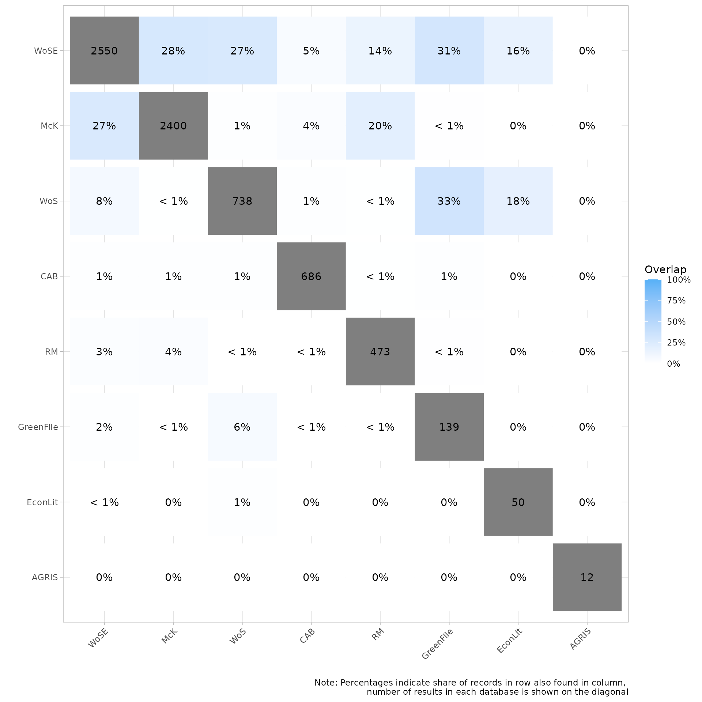
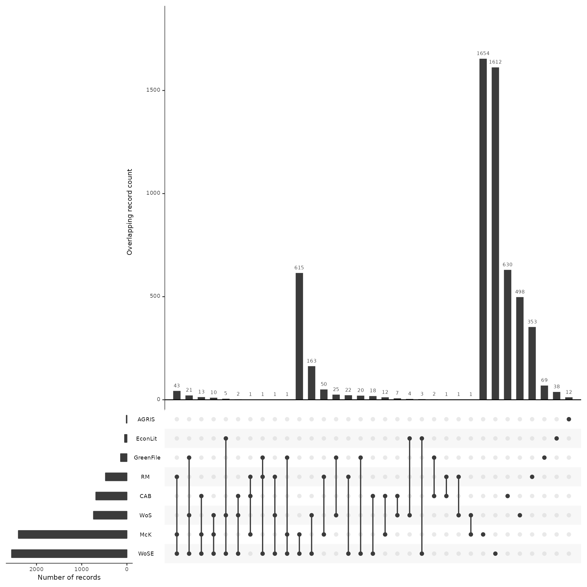
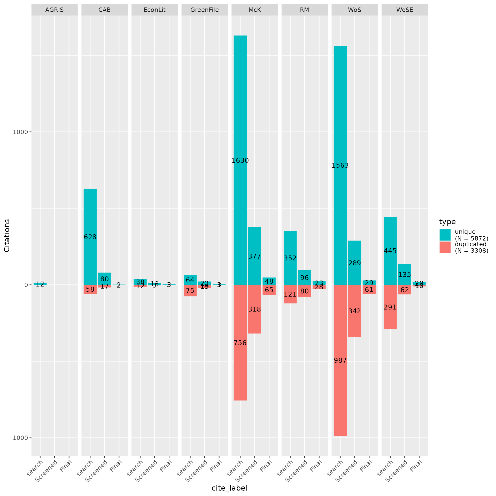

CiteSource - Short working example
Trevor Riley
2023-02-09
Source:vignettes/citesource_working_example.rmd
citesource_working_example.rmdAbout the package
CiteSource provides users with the ability to deduplicate references while maintaining customizable metadata. Instead of the traditional deduplication method where records are removed and only one record is selected to be retained, CiteSource retains each duplicate record while merging metadata into a single main record. This main record maintains user-customized metadata in three fields, “cite_source”, “cite_label” and “tag_naming”. In the merging process, select metadata fields are also automatically compared (currently DOI & Abstract) and the most complete metadata is used in the main record.
Installation
# Install the remotes packages to enable installation from GitHub
install.packages("remotes")
# Install CiteSource
remotes::install_github("ESHackathon/CiteSource")After installation, you can load the package.
Import and read citation files
Users can import multiple RIS or bibtex files into CiteSource, which they can label with three custom metadata fields, Cite_Source, Cite_String, and Cite_Label.
Using the Cite_Source field, which the user can label individual files with source information such as database or platform. Beyond source information, users may also use #the Cite_Source field to provide search results using various search methodologies.
A second metadata field Cite_String can be used to specify another attribute or variable. For example, a use of Cite_Source and Cite_String may be to examine the unique and crossover citations that occur between databases, while simultaneously evaluating unique search string results.
Finally, a third field Cite_Label can be used to apply yet another variable. This label was intended to be used in combination with the previous two, in order to track the inclusion or exclusion of citations over the course of title/abstract screening and full text screening.
Indicate location files
citation_files <- list.files(path = file.path("../tests/testthat/data", "working_example/short"), pattern = "\\.ris", full.names = TRUE)
citation_files
#> [1] "../tests/testthat/data/working_example/short/AGRIS.ris"
#> [2] "../tests/testthat/data/working_example/short/CAB.ris"
#> [3] "../tests/testthat/data/working_example/short/EconLit.ris"
#> [4] "../tests/testthat/data/working_example/short/Final.ris"
#> [5] "../tests/testthat/data/working_example/short/GreenFile.ris"
#> [6] "../tests/testthat/data/working_example/short/McK.ris"
#> [7] "../tests/testthat/data/working_example/short/RM.ris"
#> [8] "../tests/testthat/data/working_example/short/TiAb.ris"
#> [9] "../tests/testthat/data/working_example/short/WoS_early.ris"
#> [10] "../tests/testthat/data/working_example/short/WoS_later.ris"Read citation files
Read citation files and store. Provide tags for each file with appropriate Cite_Source, Cite_String, or Cite_Label. Store these citations. Note: This vignette is the short a short version. Sources McK and RM represent a consolidation of multiple citation files, to see these citation files, view the long version of this vignette.
citations <- read_citations(citation_files,
cite_sources = c(
"AGRIS", "CAB", "EconLit", NA,
"GreenFile", "McK", "RM", NA, "WoS", "WoSE"
),
cite_labels = c(
"search", "search", "search", "Final",
"search", "search", "search", "Screened", "search", "search"
),
tag_naming = "best_guess"
)
#> Import completed - with the following details:
#> file cite_source cite_string cite_label citations
#> 1 AGRIS.ris AGRIS <NA> search 12
#> 2 CAB.ris CAB <NA> search 687
#> 3 EconLit.ris EconLit <NA> search 50
#> 4 Final.ris <NA> <NA> Final 243
#> 5 GreenFile.ris GreenFile <NA> search 139
#> 6 McK.ris McK <NA> search 2661
#> 7 RM.ris RM <NA> search 530
#> 8 TiAb.ris <NA> <NA> Screened 1574
#> 9 WoS_early.ris WoS <NA> search 2550
#> 10 WoS_later.ris WoSE <NA> search 738Deduplicate and identify crossover records
CiteSource allows users to merge duplicates while maintaining information in the cite_label and cite_source metadata field. Thus, information about the origin of the records is not lost in the deduplication process.
dedup_results <- dedup_citations(citations, merge_citations = TRUE)
#> formatting data...
#> identifying potential duplicates...
#> identified duplicates!
#> merging citations...
unique_citations <- dedup_results$uniqueCount number of unique and non-unique citations from different sources and labels
n_unique <- count_unique(unique_citations)Create dataframe indicating occurrence of records across sources
source_comparison <- compare_sources(unique_citations, comp_type = "sources")Source & method analysis
When teams are selecting databases for inclusion in a review it can be extremely difficult to determine the best resources and determine the ROI in terms of the time it takes to apply searches. This is especially true in environmental research where research is often cross-disciplinary. By tracking where/how each citation was found, the evidence synthesis community could in turn track the efficacy of various databases and identify the most relevant resources as it relates to their research topic. This idea can be extended to search string comparison as well as strategy and methodology comparison.
Plot overlap as a heatmap matrix
CiteSource performs citation analysis and deduplication within each source file, prior to comparing sources across source files. This heatmap shows the number of citations unique to that each source at the top of the source’s column. The heatmap also provides a count of citations that were found at the intersection of each source.
In this case you can see that the source tag McK only shows 2400 results, while the initial .ris file contained 2661 citations. This means that CiteSource identified 261 duplicate references within that citation list. The 2400 remaining citations then attributed to this source. Looking at the source Greenfile, we can see that the CiteSource did not find any duplicate citations within this source as both counts read 139.
CiteSource is more accurate in deduplicating references when complete metadata is provided. It is recommended that users provide the most full metadata as possible. Please not that citations in this vignette were stripped of their abstracts to avoid any copyright issues.
my_heatmap <- plot_source_overlap_heatmap(source_comparison)
my_heatmap
Plot overlap as a heatmap matrix as percentage
The following heatmap provides the an overview of the overlapping citations by percent of each source’s count. For example the EconLit source contains 50 citations, of those 50 we can see on the previous heatmap that 8 of these citations were also in the source WoSE, which represents 16% of the citations from EconLit. On the other hand the same 8 citations only represent .3% of the total citations from WoSE. (currently this chart is set to display only whole numbers - we are considering changing this to display to the first decimal)
my_heatmap_percent <- plot_source_overlap_heatmap(source_comparison, plot_type = "percentages")
my_heatmap_percent
Plot overlap as an upset plot
my_upset_plot <- plot_source_overlap_upset(source_comparison, decreasing = c(TRUE, TRUE))
#> Plotting a large number of groups. Consider reducing nset or sub-setting the data.
my_upset_plot
Analyzing records after screening
Once the title and abstract screening has been completed or once the final papers have been selected, users can analyze the contributions of each source or search method to these screening phases to better understand their impact on the review. By using the “cite_source” data along with the “cite_label” data, users can analyze the number of overlapping/unique records from each source or method.
Assess contribution of sources by review stage
my_contributions <- plot_contributions(n_unique,
center = TRUE,
bar_order = c("search", "Screened", "Final")
)
my_contributions
Documentation and output
In addition to the above visualizations, it may be useful to export datasets for additional analysis, for example to identify the origin of specific records. Presenting data in the form a search summary table can also provide a user with information about the specificity and recall of each database (see Bethel et al. 2021 for more about search summary tables.).